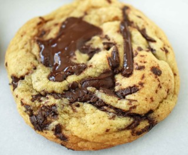

These cookies are aptly named! If you're looking for a twist on the traditional chocolate chip
cookie, then this recipe is for you.
What to Expect:
Unique Flavor: These cookies often incorporate additional ingredients beyond chocolate chips, like nuts,
spices, or even dried fruit. Be prepared for a flavor profile that goes beyond the usual sweetness.
Different Textures: Depending on the recipe, these cookies might be chewier, crispier, or even have an
oatmeal-like texture. Embrace the variety!
Not for Purists:
If you crave the nostalgic taste of a classic chocolate chip cookie, this might not be your first
choice. Adventure Awaits! Be open to new flavor combinations and textures. You might discover a new
favorite cookie recipe.
Below is the base ingredients and steps on how to bake these masterpieces!
Ingredients:
1 cup (2 sticks) unsalted butter, browned
3/4 cup granulated sugar
3/4 cup packed brown sugar
1 teaspoon vanilla extract
2 large eggs
2 1/4 cups all-purpose flour
1 teaspoon baking soda
1/2 teaspoon salt
2 cups sweet chocolate chips
1 cup chopped peanuts (optional)

Steps:
Preheat the oven to 375°F (190°C). Line baking sheets with parchment paper or silicone baking
mats.
In a large mixing bowl, cream together the browned butter, granulated sugar, brown sugar,
and vanilla extract until light and fluffy.
Add the eggs, one at a time, beating well after each addition.
In a separate bowl, whisk together the flour, baking soda, and salt. Gradually add the dry
ingredients to the wet ingredients, mixing until just combined.
Stir in the chocolate chips and chopped nuts (if using) until evenly distributed
throughout the dough.
Drop rounded tablespoons of dough onto the prepared baking sheets, spacing them
about 2 inches apart.
Bake in the preheated oven for 9 to 11 minutes, or until the edges are golden brown.
Remove from the oven and allow the cookies to cool on the baking sheets for a few minutes
before transferring them to wire racks to cool completely.